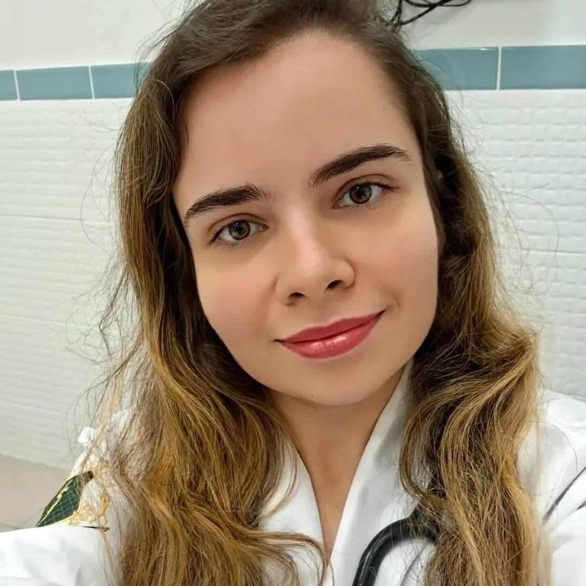

Ansiedade que não desliga
Preocupação constante, aperto no peito, sono ruim e a sensação de estar sempre em alerta.
Medicina · Psiquiatria · Psicanálise
Cuidado integral que une Clínica Geral, Psiquiatria e Psicanálise — com escuta ativa, empatia e um plano de tratamento pensado para você. Atendimento presencial no Recreio dos Bandeirantes, online e domiciliar.
Quando buscar ajuda
Muitos sinais são tratados como cansaço ou fase difícil. Reconhecê-los é o primeiro passo — e não é preciso esperar chegar ao limite para pedir ajuda.
Conversar sobre o meu casoPreocupação constante, aperto no peito, sono ruim e a sensação de estar sempre em alerta.
Perda de prazer, cansaço desproporcional, choro fácil ou vontade de se isolar.
Dores, tontura ou queixas físicas recorrentes que os exames não justificam.
Mudanças bruscas que afetam trabalho, estudos e relações próximas.
Remédios iniciados por conta própria, mantidos há anos ou nunca reavaliados.
Perdas, separações, adoecimento ou fases de transição que pedem escuta e apoio.
Serviços
Presencial, por telemedicina ou no conforto da sua casa — você escolhe o formato, a condução clínica é a mesma.
Avaliação diagnóstica cuidadosa, condução medicamentosa quando necessária e acompanhamento contínuo — sempre com explicação clara sobre cada decisão do tratamento.
Cuidado da saúde física com a mesma atenção dada à mental: queixas gerais, prevenção, exames de rotina e manejo de condições crônicas.
Sessões de terapia com escuta qualificada, para trabalhar o que sustenta o sofrimento além do sintoma, no seu tempo e com continuidade.
“Não trato apenas sintomas.
Acompanho a pessoa que os carrega.”

Sobre a médica
Médica generalista, pós-graduada em Psiquiatria e psicanalista. O consultório nasceu do desejo de unir Clínica Geral, Psiquiatria e Psicanálise em um cuidado verdadeiramente integral — porque saúde física e saúde mental não se separam.
Atende adolescentes, adultos e idosos, com escuta qualificada e tratamento individualizado. Cada consulta considera a história, o contexto e o ritmo de quem está ali — não apenas o quadro clínico.
Confiança construída com dados reais
Consultório desde
Especialidades integradas
Bairros com atendimento domiciliar
Perfil verificado no Google · avaliações de pacientes em breve nesta página.
Dúvidas frequentes
O atendimento é exclusivamente particular, sem convênios. Os valores e as formas de pagamento são informados no contato pelo WhatsApp, antes do agendamento.
A psiquiatria avalia o quadro clínico e, quando indicado, conduz o tratamento medicamentoso. A psicanálise trabalha a história e os sentidos por trás do sofrimento, em sessões de terapia. Aqui as duas frentes podem caminhar juntas, com a mesma médica acompanhando o processo.
É uma consulta por vídeo, com a mesma duração e conduta da presencial, respeitando as normas do CFM. Você recebe o link e, quando necessário, receita e atestados em formato digital assinado.
Recreio dos Bandeirantes, Vargem Grande, Vargem Pequena, Campo Grande, Barra da Tijuca, Freguesia, Jacarepaguá e Anil. Outras regiões podem ser consultadas pelo WhatsApp.
Leve documento com foto, exames recentes se tiver e a lista de medicamentos em uso, incluindo dose. Relatórios de outros profissionais também ajudam, mas nada disso é obrigatório na primeira consulta.
Sim. O atendimento contempla adolescentes, adultos e idosos. Para adolescentes, a presença de um responsável é necessária no primeiro atendimento.
Localização
Avenida das Américas, 18.000 — sala 605A
Recreio dos Bandeirantes · Rio de Janeiro / RJ
CEP 22790-704
HorárioSexta-feira 8h–18h · Sábado 8h–16h
Telefone e WhatsApp(21) 97590-6877
Atendimento domiciliarRecreio, Vargem Grande, Vargem Pequena, Campo Grande, Barra da Tijuca, Freguesia, Jacarepaguá e Anil
Agendamento
Preencha os campos e a mensagem será aberta no WhatsApp, já organizada — assim a Dra. Bruna entende o seu caso antes do primeiro contato. Atendimento particular, sem convênio.
Se for uma emergência, procure atendimento imediato ou ligue para o CVV 188.